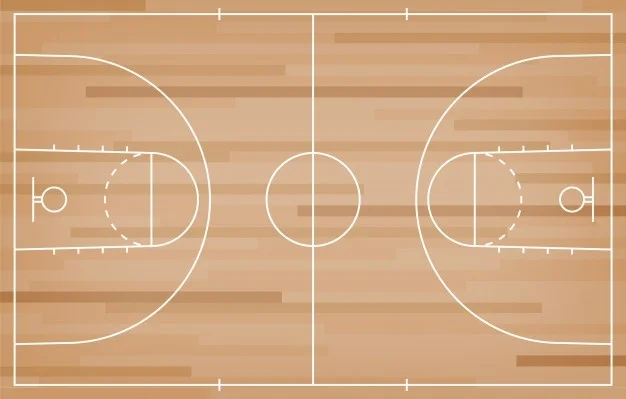

Regras do basquete
Quadra
A quadra tem 28 metros de comprimento e 15 metros de altura, as cestas ficam nas extremidades da quadra em uma altura de 3,05 metros, as quadras de basquete tem linhas demarcando a linha de 3 pontos e o garrafão

Controle de bola
O basquete é jogado com as mãos e, a partir do controle da bola, cada jogador pode passar, arremessar, quicar, rolar, tapear ou driblar.
O drible consiste em controlar a bola quicando-a com uma das mãos de cada vez. O jogador pode dar apenas um passo por quique da bola. O drible acaba quando o jogador toca com ambas as mãos simultaneamente a bola.
São infrações:
se o jogador movimentar os dois pés, estando em posse da bola - andar;
tocar a bola com as duas mãos e voltar a quicá-la - dois dribles.
Cada equipe, após o controle da bola, possui 24 segundos de posse de bola para arremessá-la à cesta adversária.
Desses 24 segundos, apenas 8 segundos podem ser executados no campo de defesa. A equipe não pode retornar com a bola ao campo de defesa após ter cruzado a linha do meio da quadra.
Equipes e tempo
As equipes tem 5 jogadores e no máximo 7 reservas por equipe sem limite para substituições em jogo podendo ocorrer a qualquer momento da partida.
As partidas são disputadas em 4 tempos de 10 minutos e no caso de empate no fim do jogo são realizadas prorrogações de 5 minutos até o desempate
Pontuação
3 pontos: arremessos de fora da linha de 3 pontos
2 pontos: dentro da linha de 3 pontos(incluindo a linha)
1 ponto: lance livre na área demarcada
Diferenças entre NBA e FIBA
Existem algumas diferenças de regras entre a NBA e a FIBA
como por exemplo:
Tamanho da quadra
NBA: 28,6m x 15,24m
FIBA: 28m x 15m
Tempo técnico
NBA: 6 por jogo (sem divisão por tempo de jogo) com duração de 1 minuto e 40 segundos. Pode ser pedido pelo técnico ou jogadores.
FIBA: 5 por jogo (2 no primeiro tempo e 3 no segundo tempo) com duração de 1 minuto. Pode ser pedido pelo técnico ou seu assistente. etc.